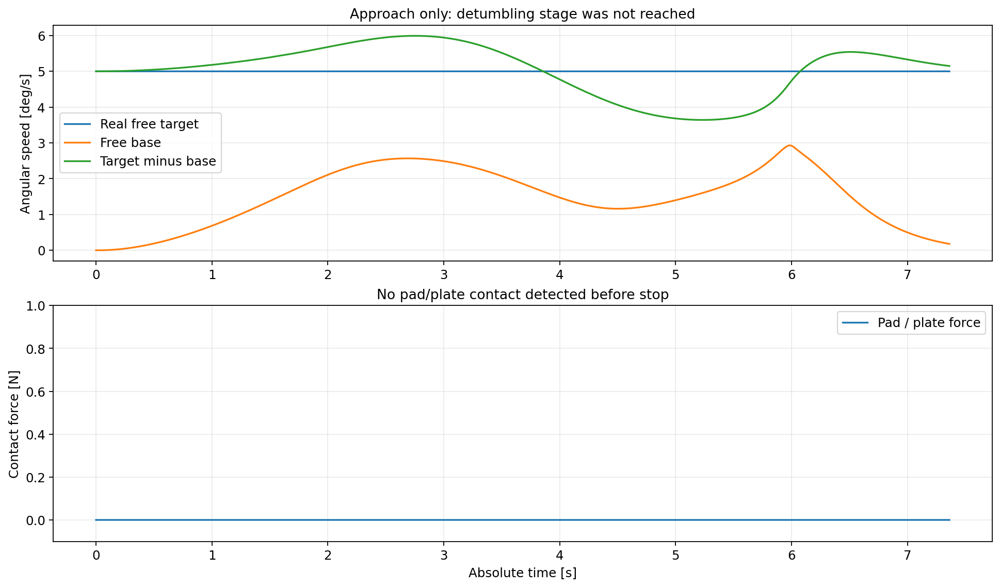
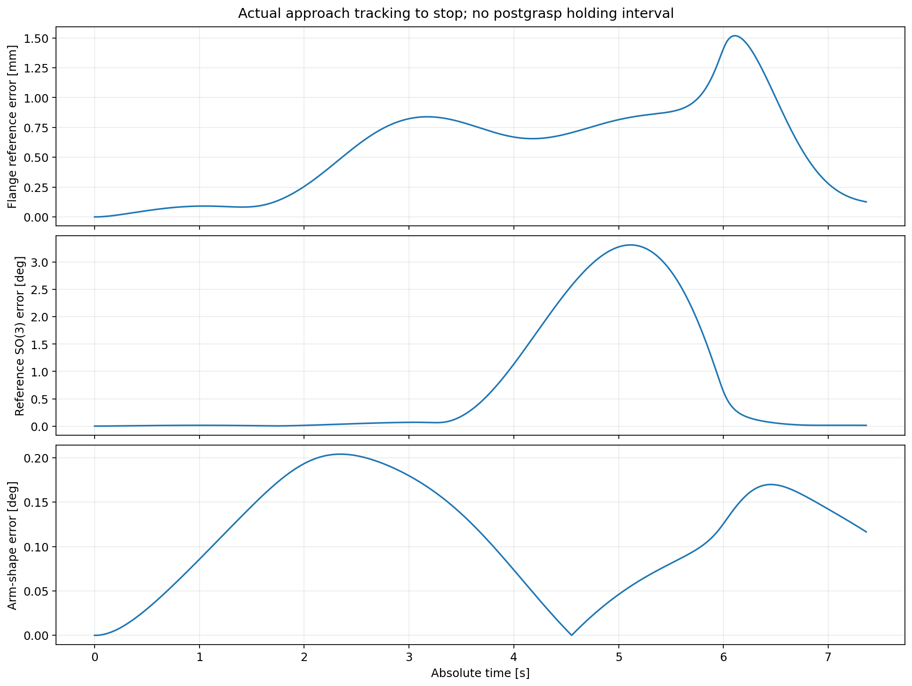
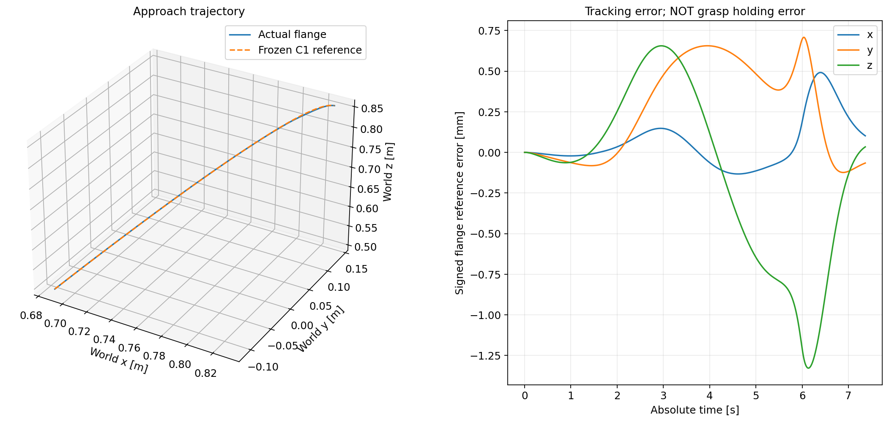
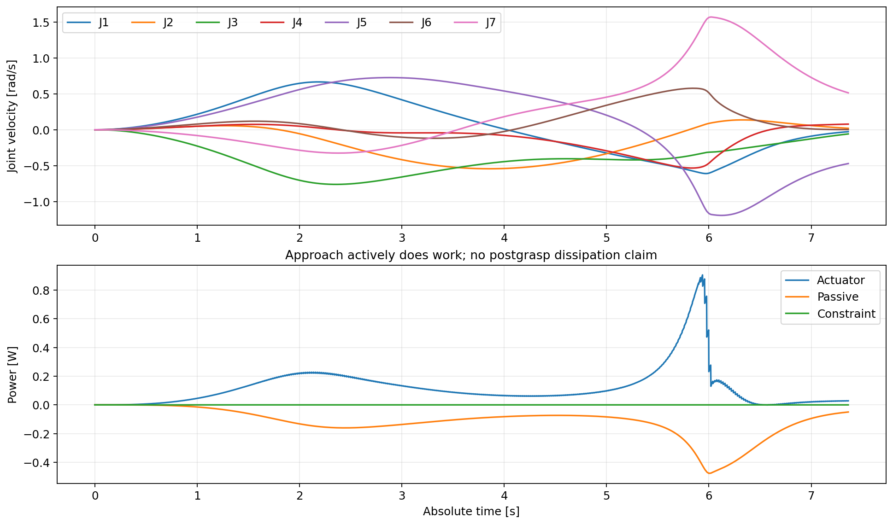
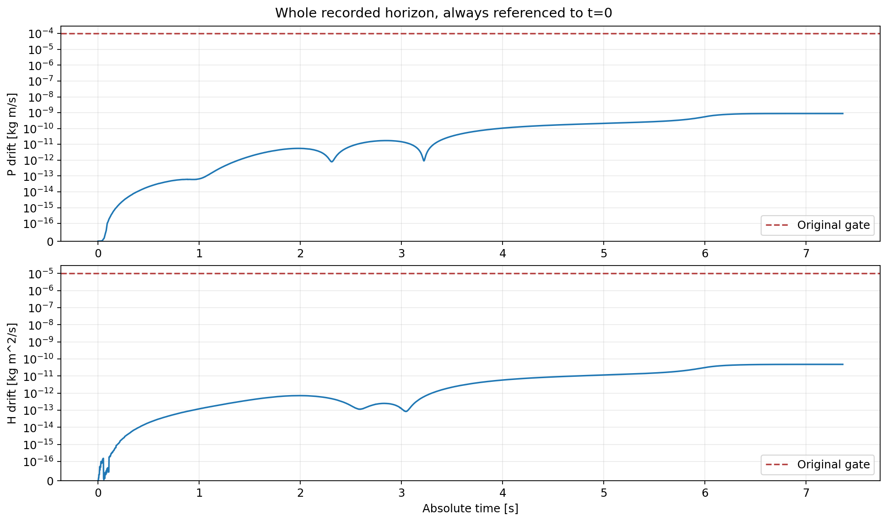
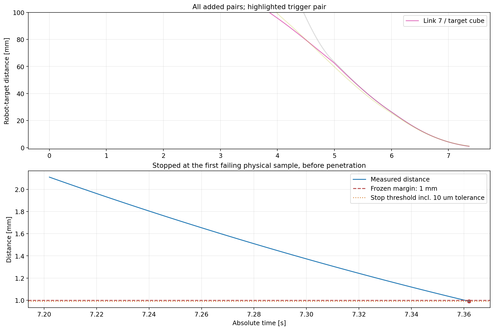

N205：从 home 连续积分，7.362 s 安全早停
link7 与目标的距离低于冻结余量。尚未接触、尚未到达 8 s 捕获检查；未验证锁紧与消旋。以下为真实停止时域，未拼接旧抓后视频。
报告 · 状态矩阵

angular_speed_and_contact
approach_tracking_errors
end_effector_trajectory
joints_and_power
momentum
target_clearance_stop